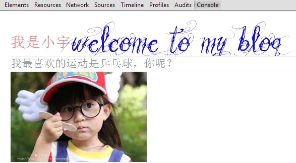

神奇的log插件
2014-1-5
请按F12打开控制台查看效果
引用
首先调用插件
< script type="text/javascript" src="js/jquery-1.8.3.min.js"> /script>
< script type="text/javascript" src="js/xxx/imgLog.js"> /script>
使用
插件提供三种语法
var style={
color:"#130BD6",
"font-size":"84px",
"font-family":"Vtks Beautiful Dreams"
}
Log(["我是小宇","welcome to my blog"],[{ "color":"#FF7979" },style]);
Log("我最喜欢的运动是乒乓球，你呢？",{"color":"#90979B", "font-size":"24px" });
Log("img","xxx.jpg",300,200);
运行结果： 
说明
此插件只在chrome 浏览器有效，兼容性尚待完善